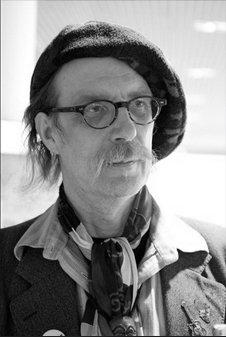

首頁 / 城市藝境 / 參展藝術家 / 藝術家 Zakary
【藝術家 Zakary 】

從設計旅店，到設計燈會展場專注公共空間，營造台灣人、甚至外國旅客的共同記憶。他大膽創新，用實驗性手法展現空間身世…
走於建築與藝術之間，劉國滄是台灣唯一同時參與過威尼斯建築雙年展、威尼斯雙年展兩項國際大展的空間設計者。 他最為人知曉的作品，是有「台南三寶」暱稱的藍晒圖、安平樹屋和佳佳西市場旅店。但其實從二○○五年起，劉國滄也幾乎年年為台灣燈會設計展場，營造台灣人重要節慶裡的共同回憶。 今年三十九歲的劉國滄，成大建築系畢業，十年前在台南成立「打開聯合工作室」。他的空間設計作品，不但建築造型、色彩或營造手段都大膽創新、具有實驗精神。 更重要的是，他專注於公共空間領域，對於都市紋理與鄉鎮歷史細膩爬梳，讓建築設計的創意與在地文化連結，用現代的手法展現空間的記憶與身世。
關於藝術家的作品
更重要的是，他專注於公共空間領域，對於都市紋理與鄉鎮歷史細膩爬梳，讓建築設計的創意與在地文化連結，用現代的手法展現空間的記憶與身世。